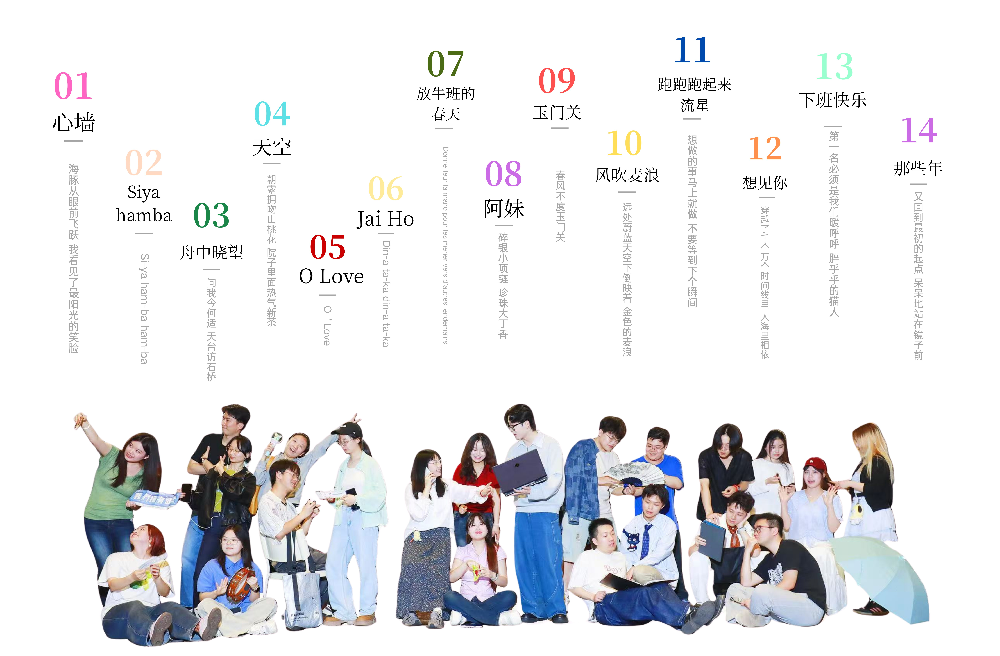

2026
CONCERT HUSH
放学快乐 · 不如一起散散步
这里是我们的合唱空间。没有繁杂的排场与刻意的装饰，只有放学铃声响起后，在夏日晚风和树荫里，最干净纯粹的人声。点击下方的每一首歌曲，开启隐藏在音符里的歌词、大意以及我们共同经历过的小故事。
01心墙
LYRICS / 歌词
一个人 眺望碧海和蓝天
在心里面 那抹灰就淡一些
海豚从眼前飞越
我看见了最阳光的笑脸
好时光都该被宝贝 因为有限
我学着不去担心得太远
不计划太多 反而能勇敢冒险
丰富的过每一天 快乐地看每一天
第一次遇见阴天遮住你侧脸
有什么故事好想了解
我感觉我懂你的特别
你的心有一道墙 但我发现一扇窗
偶尔透出一丝暖暖的微光...
MEANING / 歌词大意
哪怕内心筑起防备，只要留出一扇窗，总会有光透进来，总有人能懂你的特别。
STORY / 曲目故事
放学路上，耳机里塞着这首旋律，心里的围墙好像一下就被晚风吹倒了。
+ 配张舞台图
02Siyahamba
LYRICS / 歌词
Siyahamb' e-ku-kha-nyeni kwen-kos.
We are marching in the light of God.
marching, (hamba), marching, (hamba), oh,
We are marching in the light of God.
MEANING / 歌词大意
我们在信仰与希望的光中行进。这是一首充满南非民族律动与生命力的传统阿卡贝拉，用最纯粹的节奏传递着在光明中并肩前行的力量。
STORY / 曲目故事
充满了非洲律动的赞美诗！大家在排练时总是忍不住会跟着一起摇摆，那种快乐是完全发自内心的。
+ 配张舞台图
03舟中晓望
LYRICS / 歌词
挂席东南望，青山水国遥。
舳舻争利涉，来往接风潮。
问我今何适？天台访石桥。
坐看霞色晓，疑是赤城标。
渔歌忽近忽远，惊起岸边的白鸟；
初阳若隐若现，躲在林雾背后。
艘艘轻舟载着自由的念头，
随他们而去喝杯洒脱的酒。
风也在唱问我去向何方，
那天边朝霞就是心之所向。
漫漫水程未知通向何处，
行人无数期许只留梦中。
MEANING / 歌词大意
扬帆向东南方远望，青山绿水辽阔无垠。江面上船只争相竞渡，迎着风浪穿梭往来。你问我今天要去哪里？我要去天台山寻访那座石桥。静静地看着清晨的满天彩霞，还以为是赤城山的奇景。
STORY / 曲目故事
孟浩然笔下的唐代水乡，在现代合唱的编织下，化作了一场充满狂热与自由的东方航行。乘着轻舟，敬一杯洒脱的酒。
+ 配张舞台图
04天空
LYRICS / 歌词
不如就一起散散步
昨夜星辰 昨夜风
那是无边浪漫暖春
花树下起阵阵雨
淅沥淅沥 朝露拥吻
山桃花 院子里面热气新茶
风铃摇曳屋檐下 嘀嗒嘀
电车还没来 要不要打伞
不如就一起散散步
I miss you 这四月的天空
大桥下 河堤旁 抚过柳叶的风
不如就一起散散步
MEANING / 歌词大意
四月的天空下，伴着落雨、花树、新茶与微风。不用考虑电车是否晚点，也不用在意是否带伞，只需要顺应此刻的心意，一起散散步。
STORY / 曲目故事
这里不仅有歌，还有微风和四月的天空。
+ 配张舞台图
05O Love
LYRICS / 歌词
O Love, that will not let me go,
I rest my weary soul in Thee;
I give thee back the life I owe,
That in thy ocean depths its flow
May richer, fuller be.
O Joy, that seeks me through the pain,
I cannot close my heart to thee;
I trace the rainbow through the rain,
And feel the promise is not vain
That morn shall tearless be.
MEANING / 歌词大意
有一种爱，永不放手，让疲惫的灵魂得以安息；有一种喜悦，穿透痛苦而来，让我们在雨中也能寻得彩虹，坚信不再有泪水的清晨终将降临。
STORY / 曲目故事
抬头看云朵的时候，总能感受到一种巨大的、无条件的包容。它接纳了我们在现实里所有的疲惫与自我怀疑，用最温柔的方式告诉我们：一切都会好起来的。
+ 配张舞台图
06Jaiho
LYRICS / 歌词
Aaja aaja jind shamiyaane ke tale
Aaja zari waale neele aasmaane ke tale
Ratti ratti sachchi maine jaan gawayi hai
Nach Nach koylon pe raat bitaayi hai
Baila! Baila!
Ahora conmigo, tu baila para hoy
Por nuestro dia de movidas,
los problemas los que sean
Salud! Baila! Baila!
Chakh le, haan chakh le, yeh raat shehed hai
Chakh le, haan rakh le, Dil hai, dil aakhri hadd hai
Kaala kaala kaajal tera Koi kaala jaadu hai na?
Jai Ho!
MEANING / 歌词大意
来吧我的生命，来到这片蔚蓝的天空穹顶之下。我已经燃尽了所有，在这炭火上整夜起舞。所以跳舞吧！把所有的烦恼抛在脑后，为今天的律动干杯！
STORY / 曲目故事
“Jai Ho”在印地语中意为“祝你胜利”。在这首歌的排练中，我们学会了放下所有的矜持，真正去享受音乐带来的狂欢与释放。
+ 配张舞台图
07放牛班的春天
LYRICS / 歌词
Vois sur ton chemin
gamins oubliés égarés
Donne leur la main pour les mener
vers d'autres lendemains
Sens au coeur de la nuit
l'onde d'espoir
ardeur de la vie
sentier de gloire
Bonheurs enfantins
trop vit' oubliés effacés
une lumière dorée brille sans fin
tout au bout du chemin
MEANING / 歌词大意
看看你经过的路上，那些被遗忘、迷失的孩子们。向他们伸出手，将他们引向美好的明天。在黑夜的中心，感受希望的微波、生命的热忱和荣耀的归途。
STORY / 曲目故事
当童声合唱的经典旋律再次响起，仿佛我们又回到了那个用音乐治愈一切的“池塘之底”。
+ 配张舞台图
08阿妹
LYRICS / 歌词
雀儿成一双，箸也放一双，红糖水，生在沸。
炮烟快要放，圆眼撒春床，我的阿妹在何处。
老早捉迷藏，能界也捉迷藏，明朝阿妹要嫁人。
小时候妳不肯，上次问我不肯，该日问无人回答，肯或者勿肯。
三里路，上下天涯，窗台下，又插新花，红尘几多。
分离又谁人肯，阿妹哟慢些走。
碎银小项链，珍珠大丁香，阿妹的手，生好兮。
红裙配祠堂，婚纱配教堂，阿妹会选哪一种，还记牢。
赤里膊脚在沙滩，太阳落山帮你系鞋带，你说带我回家可以不可以，我说，好。
做事干最重要，现在我好比一只鹤，飘来飘去，你能否能等等添。
三里路，半生天涯，窗台下，秋冬春夏，红尘几多。
分离又谁人肯，阿妹哟慢些走。
MEANING / 歌词大意
歌曲融合了吴侬软语的温婉，讲述了一段跨越时间的青涩爱恋与离愁别绪，充满了江南水乡的画面感。
STORY / 曲目故事
呢喃的方言里，藏着岁月最温柔的角落。每一次唱起，都像是翻开了一本泛黄的老相册，慢慢回忆起那个扎着麻花辫的阿妹。
+ 配张舞台图
09玉门关
LYRICS / 歌词
沙啦啦啦啦啦啦...
漫漫黄沙云空遮 瑟瑟寒风铁剑冷
故乡在那很远很远的地方
异邦人你在盼着何处的月光
风渐停沙渐息 细无声飞雪临
葫芦河畔扬尘，十万铁骑叩关
长夜雪满天为吾披肩，大唐好儿郎气贯昊天
腰悬三尺剑愿为君锋 随君入敌营生死何惧
人衔枚马裹蹄敌军已十步内
蹄拒敌关外，东营的随我来！！！喔！
远在白云外，黄沙散落在胸前，黄河远在天那边
夜幕褪去啊，悄悄降临黄河，沙烟外十人戍边三人还
飞雪啊盖住了城墙，风儿啊何处是江南
黄河云那边一片孤城万仞山，笛声悠悠伴我入梦
杨柳新枝带我回故乡
黄河远上白云间，一片孤城万仞山
羌笛何需怨杨柳，春风不度玉门关
MEANING / 歌词大意
唱尽了大唐将士戍边卫国的悲壮与思乡之情。长夜雪满天，腰悬三尺剑，虽有“春风不度”的苍凉，却也有“气贯昊天”的豪迈。
STORY / 曲目故事
排练这首歌时，每个人都在努力用声音重塑那片漫漫黄沙。从极静的低语到千军万马的爆发，这是我们献给历史的一场壮阔回望。
+ 配张舞台图
10风吹麦浪
LYRICS / 歌词
远处蔚蓝天空下 涌动着金色的麦浪
就在那里曾是你和我 爱过的地方
当微风带着收获的味道 吹向我脸庞
想起你轻柔的话语 曾打湿我眼眶
我们曾在田野里歌唱 在冬季盼望
却没能等到阳光下 这秋天的景象
就让曾经的誓言飞舞吧 随西风飘荡
就像你柔软的长发 曾芬芳我梦乡
MEANING / 歌词大意
借着随风起伏的金色麦浪，回忆起曾经的美好与纯真，以及那些在秋风中飘散的誓言。
STORY / 曲目故事
最简单的旋律，却总能轻易拨动心底最柔软的那根弦，仿佛真的有一阵风从舞台吹向了金色的原野。
+ 配张舞台图
11跑跑跑起来 流星
LYRICS / 歌词
跑跑跑起来！流星！跑跑跑起来跟着流星！
想做的事马上就做，不要等到下个瞬间！
追上那道光线，就能彻底打败时间！
我争分夺秒，和时间赛跑。我漫无目的，混乱而有序。
你犹豫不决，想来又想去。你有点迟钝，好像个笨人！
不要再想现在出发，碰碰运气或许你能赢！
我在时间尽头等你，跟上我吧！哈哈哈哈！
MEANING / 歌词大意
把所有的犹豫抛在脑后，不要顾虑太多。想做的事立刻就去做，去追赶光线，去打败时间。
STORY / 曲目故事
想做的事马上就做，不要等到下一个瞬间。跟着流星跑起来，快乐就在脚下。
+ 配张舞台图
12想见你
LYRICS / 歌词
当爱情遗落成遗迹
用象形刻划成回忆
想念几个世纪才
到冰河时期
想见你 只想见你 未来过去 我只想见你
穿越了 千个万个 时间线里 人海里相依
用尽了 逻辑心机 推理爱情 最难解的谜
会不会 你也 和我一样 在等待一句 我愿意
MEANING / 歌词大意
穿越了千个万个时间线里，人海里相依。
STORY / 曲目故事
用和声解开最难解的谜题，穿越平行时空，只为在舞台上再一次相遇。
+ 配张舞台图
13下班快乐
LYRICS / 歌词
天空有着多少颗的星辰，地上就有多少段的人生。
外头无论多么样的寒冷，蜂蜜酒能把我们给焐热。
欢迎各位光临星河旅馆！
冲在前面的小孩，马上都给我们让开路。要是没有我们发光，你们全部都得冷飕飕。
我不管我不管我不管！第一名必须是我们，暖呼呼胖乎乎的猫人。
先进晚进全都一样，我这里蜂蜜酒喝到饱。
不要着急下班快乐，到时候洗个热水澡。
我等按照各自轨迹，参与周而复始的命运。
迎接黎明，下班快乐！
来自深蓝夜空的珍珠。愉快地跳舞，让我们庆祝，属于我们休息的时刻。下班快乐！
尽情地欢呼，泡澡真是让人舒服。下班快乐！
哦 星河旅馆，你是我们温柔的故乡。下班快乐！
MEANING / 歌词大意
属于我们休息的时刻，把所有的疲惫抛在脑后。在星河旅馆里，点一杯蜂蜜酒，洗一个热水澡，彻底放松。
STORY / 曲目故事
放学啦，下班啦，快乐和松弛永远属于每一个爱唱歌的少年。
+ 配张舞台图
14那些年
LYRICS / 歌词
又回到最初的起点，记忆中你青涩的脸，我们终于来到了这一天。
桌垫下的老照片，无数回忆连结，今天男孩要赴女孩最后的约。
又回到最初的起点，呆呆地站在镜子前，笨拙系上红色领带的结。
将头发梳成大人模样，穿上一身帅气西装，等会儿见你一定比想象美。
好想再回到那些年的时光，回到教室座位前后，故意讨你温柔的骂。
黑板上排列组合，你舍得解开吗？谁与谁坐他又爱着她。
那些年错过的大雨，那些年错过的爱情，好想拥抱你，拥抱错过的勇气。
曾经想征服全世界，到最后回首才发现，这世界滴滴点点全部都是你。
那些年错过的大雨，那些年错过的爱情，好想告诉你，告诉你我没有忘记。
那天晚上满天星星，平行时空下的约定，再一次相遇我会紧紧抱着你，紧紧抱着你。
MEANING / 歌词大意
那些年错过的雨，那些年错过的爱情。回首才发现，这世界滴滴点点全部都是你。
STORY / 曲目故事
又回到最初的起点，呆呆地站在镜子前。我们终于迎来了期盼已久的这一天。这是送给青春最好的一场毕业典礼。
+ 配张舞台图